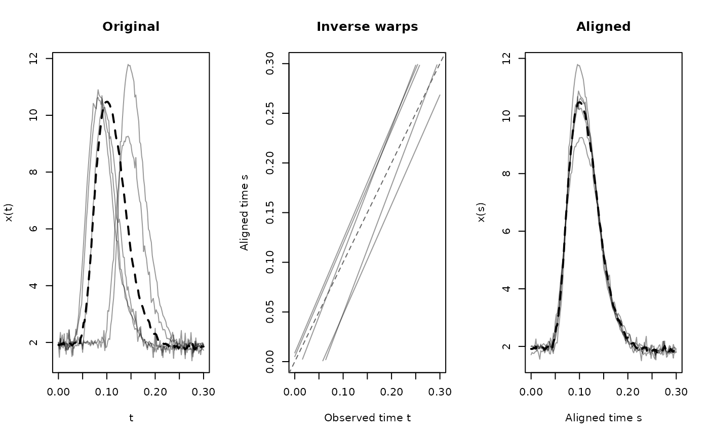

tf_registration objects store the result of tf_register(), including
the aligned (registered) curves, estimated inverse warping functions
\(h_i^{-1}\) (observed \(\to\) aligned time), and the template used.
Use accessors tf_aligned(), tf_inv_warps(), and tf_template() to extract
components.
Usage
tf_aligned(x)
tf_inv_warps(x)
tf_template(x)
# S3 method for class 'tf_registration'
print(x, ...)
# S3 method for class 'tf_registration'
summary(object, ...)
# S3 method for class 'summary.tf_registration'
print(x, ...)
# S3 method for class 'tf_registration'
plot(x, ...)
# S3 method for class 'tf_registration'
x[i]
# S3 method for class 'tf_registration'
length(x)Value
For tf_registration objects: a list with entries registered
(tf-vector of aligned/registered functions from x), inv_warps
(inverse warping functions aligning x to the template function), the
template function, the original data x (if store_x = TRUE was used
in tf_register()), and the call to tf_register() that created the
object. Accessors return the respective component.
Summary diagnostics
summary() computes per-curve diagnostics for assessing registration
quality and prints their averages and/or deciles.
The printed output contains four sections:
Amplitude variance reduction (only if store_x = TRUE): the proportion
of pointwise variance removed by registration, computed as
\(1 - \bar{V}_{\mathrm{registered}} / \bar{V}_{\mathrm{original}}\)
where \(\bar{V}\) is the mean (across the domain) of the pointwise
variance (across curves). Values near 1 indicate that registration
removed most of the original variability; values near 0 indicate little
change; negative values indicate that registration increased variability
(a sign that something went wrong).
Warp deviation from identity (deciles across curves): each curve's inverse warping function \(h_i^{-1}\) is compared to the identity via the normalized integral \( 2/L^2 \int |h_i^{-1}(t) - t|\, dt \), where \(L\) is the domain length. The normalizing constant \(L^2/2\) is the theoretical upper limit deviation for a monotone, domain-preserving warp that maps all timepoints to the first or last timepoint, so values range from 0 (identity warp, no time deformation) to 1 (maximal crazy warping). Values above \(\approx 0.3\) may suggest aggressive warping that could warrant inspection.
Warp slopes (deciles of per-curve min and max \(dh^{-1}/dt\)): a slope of 1 of the warp corresponds to no local time deformation (identity). Slopes \(> 1\) indicate local time dilation (the warped curve is "stretched" relative to the template), slopes \(< 1\) indicate local time compression, so slopes near 0 or very large slopes indicate extreme local deformation. For affine shift warps, all slopes are exactly 1.
Domain coverage loss (only printed if any loss occurs): the fraction of
the original domain range that is lost per curve after alignment, computed
as 1 - range(aligned_arg) / range(original_arg). This is only relevant
for affine (non-domain-preserving) warps where alignment can shift parts of
curves outside the original domain. Domain-preserving methods (srvf,
cc, landmark) always have zero domain loss.
Accessors
tf_aligned(x): extract the registered/aligned curves (tfdvector).tf_inv_warps(x): extract the estimated inverse warping functions \(h_i^{-1}(t)\) that map observed time to aligned time (tfdvector). Usetf_invert()on the result to obtain forward warps if needed.tf_template(x): extract the template function (tfvector of length 1).
See also
Other registration functions:
tf_align(),
tf_estimate_warps(),
tf_landmarks_extrema(),
tf_register(),
tf_warp()
Examples
reg <- tf_register(pinch[1:5], method = "affine", type = "shift_scale")
#> Warning: ℹ 29 evaluations were `NA`
#> ✖ Returning irregular <tfd>.
#> Warning: ℹ 24 evaluations were `NA`
#> ✖ Returning irregular <tfd>.
#> Warning: ℹ 24 evaluations were `NA`
#> ✖ Returning irregular <tfd>.
reg
#> <tf_registration>
#> Call: tf_register(x = pinch[1:5], type = "shift_scale", method = "affine")
#> 5 curves on [0, 0.3]
#> Components: aligned, inv_warps, template, original data
summary(reg)
#> tf_register(x = pinch[1:5], type = "shift_scale", method = "affine")
#>
#> 5 curve(s) on [0, 0.3]
#>
#> Amplitude variance reduction: 97.6%
#>
#> Inverse warp deviations from identity (relative to domain length):
#> 0% 10% 25% 50% 75% 90% 100%
#> 0.1080 0.1175 0.1318 0.1503 0.1545 0.2170 0.2586
#>
#> Inverse warp slopes (1 = identity):
#> overall range: [1.106, 1.291]
#> per-curve slopes:
#> 0% 10% 25% 50% 75% 90% 100%
#> 1.106 1.118 1.137 1.143 1.265 1.280 1.291
#>
#> Domain coverage loss after alignment (fraction of original range):
#> 0% 10% 25% 50% 75% 90% 100%
#> 0.0000 0.0000 0.0000 0.0200 0.0333 0.0773 0.1067
plot(reg)
